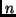
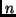
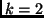
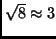
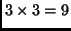
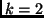
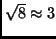
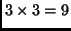

Next: Methods available
Up: Dimension Reduction Regression in
Previous: Introduction
The package for dimension reduction called dr can be
obtained from the Comprehensive R Archive Network, CRAN, at
http://www.R-project.org.
The primary function in this package is called dr. Its usage is
modeled after the function lm that is used for fitting
linear models, and so many of the arguments that can be used in
lm can also be used in dr. The following statements will
examine dimension reduction using sir applied to the Australian
Institute of Sport data:
> library(dr)
> data(ais)
> attach(ais)
> i1 <- dr(LBM~ Ht + Wt + log(RCC) + WCC, method="sir", nslices=8)
First, provide a formula giving the response  on the
left side, and the predictors on the right side. The response can
be a vector of  elements or for sir and
save it can be a matrix with rows and
on the
left side, and the predictors on the right side. The response can
be a vector of  elements or for sir and
save it can be a matrix with rows and  columns.
The model statement on the right side can include factors and
interactions, or transformations, so the syntax is very general.
The remaining arguments are all optional, and the values shown are
all defaults. method can equal either "sir",
"save", "phd", "phdres", "phdq"
or
"phdy".
Adding other methods is not
difficult, and is described in Section 3.6.
The number of slices is relevant only for the methods that use slicing,
sir and save, and has default equal to the larger of 8
and the number of predictors plus 3. If the response has
columns, then the argument nslices should be a vector of
elements. If it is specified as a number rather than a
vector, then that number will give the total number of cells,
approximately. For example, if  and nslices=8, the
program will slice
 slices along each of the two response variables for a
total of  cells. The argument numdir
specifies the number of directions to display in printed output
and the number of tests to compute. The default is 3.
Keywords inherited from lm include weights,
which if set should be a
vector of the same length of the response of positive numbers;
contrasts,
which specifies how to turn factors into variables;
na.action, which specifies how to ``handle" missing
values. The default for this argument is
na.omit, which will reduce the dataset by eliminating all cases with
one or more missing value. The argument subset can be set
to a list of case indices to be used in the computations; all
other cases are ignored.
Brief printed output from the dr method is obtained by simply typing
the name of the object created, i1 in the above example:
columns.
The model statement on the right side can include factors and
interactions, or transformations, so the syntax is very general.
The remaining arguments are all optional, and the values shown are
all defaults. method can equal either "sir",
"save", "phd", "phdres", "phdq"
or
"phdy".
Adding other methods is not
difficult, and is described in Section 3.6.
The number of slices is relevant only for the methods that use slicing,
sir and save, and has default equal to the larger of 8
and the number of predictors plus 3. If the response has
columns, then the argument nslices should be a vector of
elements. If it is specified as a number rather than a
vector, then that number will give the total number of cells,
approximately. For example, if  and nslices=8, the
program will slice
 slices along each of the two response variables for a
total of  cells. The argument numdir
specifies the number of directions to display in printed output
and the number of tests to compute. The default is 3.
Keywords inherited from lm include weights,
which if set should be a
vector of the same length of the response of positive numbers;
contrasts,
which specifies how to turn factors into variables;
na.action, which specifies how to ``handle" missing
values. The default for this argument is
na.omit, which will reduce the dataset by eliminating all cases with
one or more missing value. The argument subset can be set
to a list of case indices to be used in the computations; all
other cases are ignored.
Brief printed output from the dr method is obtained by simply typing
the name of the object created, i1 in the above example:
> i1
Call:
dr(formula = LBM ~ Ht + Wt + log(RCC) + WCC, method = "sir", nslices = 8)
Eigenvectors:
Dir1 Dir2 Dir3 Dir4
Ht 0.01054752 -0.0001569418 -0.10750718 0.009197952
Wt 0.02374812 0.0040912479 0.06248766 -0.019286750
log(RCC) 0.99960915 -0.9999614779 0.99211547 0.757087590
WCC -0.01031144 0.0077640009 -0.01563290 0.652963858
Eigenvalues:
[1] 0.87789585 0.15017504 0.03972711 0.01737281
This output repeats the call that created the object, and basic summary
statistics, described more completely in Section 3.1. Using the
summary method gives more complete output:
> summary(i1)
Call:
dr(formula = LBM ~ Ht + Wt + log(RCC) + WCC, method = "sir", nslices = 8)
Terms:
LBM ~ Ht + Wt + log(RCC) + WCC
Method:
sir with 8 slices, n = 202.
Slice Sizes:
26 26 25 25 25 27 30 18
Eigenvectors:
Dir1 Dir2 Dir3 Dir4
Ht 0.01055 0.0001569 -0.10751 0.009198
Wt 0.02375 -0.0040912 0.06249 -0.019287
log(RCC) 0.99961 0.9999615 0.99212 0.757088
WCC -0.01031 -0.0077640 -0.01563 0.652964
Dir1 Dir2 Dir3 Dir4
Eigenvalues 0.8779 0.1502 0.03973 0.01737
R^2(OLS|dr) 0.9986 0.9987 0.99978 1.00000
Asymp. Chi-square tests for dimension:
Stat df p-value
0D vs >= 1D 219.205 28 0.000000
1D vs >= 2D 41.870 18 0.001153
2D vs >= 3D 11.534 10 0.317440
3D vs >= 4D 3.509 4 0.476465
This output repeats most of the basic output, plus it also gives information
on the slices and on tests of dimension, if available.
The class of the object created by dr depends on the value of
the argument method. For example, if
method="sir", the object is of class sir if the response is
univariate and msir if the response is multivariate. If
method="save", the object is of class save or msave.
All these objects inherit from the class dr.
Several additional quantities are computed and stored in the object. These
include:
> names(i1)
[1] "formula" "contrasts" "xlevels" "call"
[5] "ols.coef" "ols.fit" "weights" "cols.used"
[9] "offset" "estimate.weights" "terms" "method"
[13] "response.name" "model" "cases" "evectors"
[17] "evalues" "numdir" "raw.evectors" "decomp"
[21] "M" "slice.info"
For example, to have access to the eigenvectors of  , type
, type
> i1$evectors
Dir1 Dir2 Dir3 Dir4
Ht 0.01054752 0.0001569418 -0.10750718 0.009197952
Wt 0.02374812 -0.0040912479 0.06248766 -0.019286750
log(RCC) 0.99960915 0.9999614779 0.99211547 0.757087590
WCC -0.01031144 -0.0077640009 -0.01563290 0.652963858
while i1$M returns the value of the matrix . ols.fit returns ols
fitted values (or weighted least squares fitted values, if appropriate)
which are computed and used by some of the methods and summaries.
Next: Methods available
Up: Dimension Reduction Regression in
Previous: Introduction
Sandy Weisberg
2002-01-10